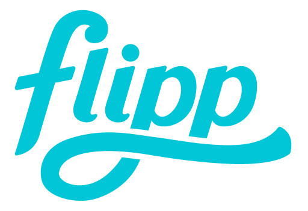
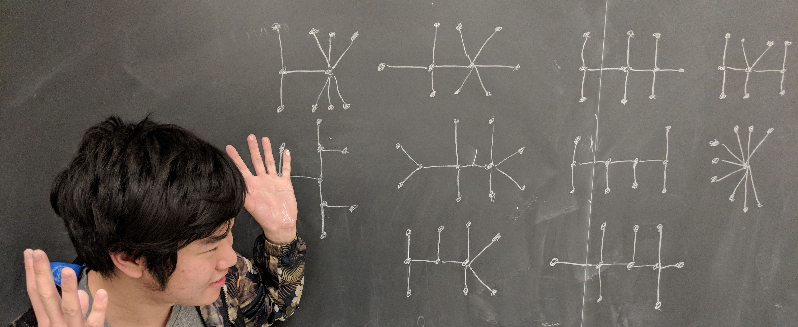
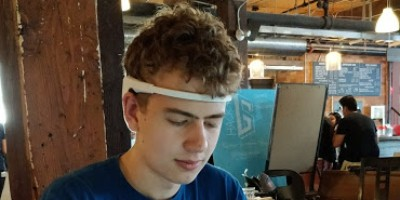

Close
Hello!
I'm a programmer that adores GitHub as much as AWS' Spot Instances. As a university student, I’ve learned more than ever that time is priceless. So I try to squeeze enough of it for hackathons, hiking trips, and the occasional ML Book Club. I also program competitively and aspire to use data to influence policy in the city I love. So without further adieu, here lies an archive of my past projects, work experiences, and achievements. Mind if you scroll down?
Work Experience

Flipp was a dream come true for me and I couldn't have asked for a better way to spend 2 months of my eleventh-grade summer. At Flipp, I worked as a data scientist where I normalized and engineered features out of 50,000 resumes. Using these features (over 30 independent ones), and multiple bags of words, I fed my data into machine learning algorithms to predict how well candidates will fare during the hiring process.
I remember constantly asking our Talent Team over specific details in every resume to acquire a deeper understanding of the hiring process of every role at Flipp. Turns out, hockey players could become our next Operations Coordinator! I also developed an extremely accurate resume parser in response to imprecise open-source and industry parsers.
If you're interested in learning more about my time at Flipp, take a look at my end-of-term report here

As Canada's first space accelerator, MaxQ aims to lead space startups to success by providing mentorship and capital. During my tenth grade summer, I interned at one of their startups Skywatch and created an API that parsed HDF files (from NASA's satellites) into JSON. This data is then inserted into a Postgres database where third parties can query the API by geological region and time.

Toronto Hacker Club
Toronto Hacker club is an organization that strives towards promoting Computer Science education towards students. The club has hosted four hackathons to date and have been humbled to work alongside the likes of Google, Mozilla, and RBC to deliver education workshops for the high school tech scene. Before I left the club to focus on school, I managed partnerships and lead the search for the club's funding as the director of Corporate Relations.
STEM Fellowship
After placing first at the STEM Fellowship's Big Data Challenge, I jumped down a rabbit hole and joined the Fellowship's Data Science Team to train future analysts. The nonprofit is run by Canadian students who hope to equip fellow colleagues with skills in data science and scholarly writing. At the organization, I pass my days by preparing datasets for our Kaggle-like competitions and organize academic reporting challenges.
View the project

Competitive Programming

The one thing that separates a computer scientist from a competitive programmer is an obsession with Good Will Hunting. No matter how many Segment trees, Dijkstras, or BITs you make, school will never teach you how to cleverly implement the algorithms we take for granted. I specialize in writing C++ structs to help my BIT offline query at O(nlogn) complexity. Running Square Root Decomp to find the LCA is also fun. Come check out my solutions to over 500 problems.
0Hackathons
0Wins
On the stage of Canada's largest hackathon, our team proposed Agrigate, a solution to better Ontario's agricultural security. Using a combination of geographic data from Nasa and Ontario's land surveys, our webapp could deliver current climate statistics as well as project crop prices until the year 2020.
Winning Hacks

MHacks 9

Fishackathon 2016

Flybits 2016

Hack the North 2016

Climathon 2016

Hack2Action 2016
Personal Favourites

Tinder with your brainwaves

Physics Engine in Java
Visualizations

Wattpad Statistics

SentiMint

Protecting North American Bees

TTC Headway Data
Archives

Ancient Finders

Misconceptions

WordMix

CoWorm

ReHackilation

GeoConnect

Alphabet Soup

FaceFind
Before we part
View my résumé here